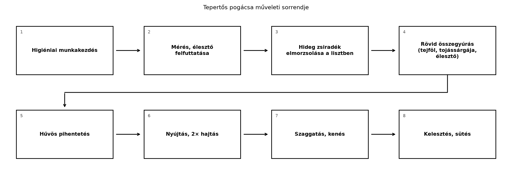

A cukrászüzemben az élesztős tészták nemcsak a reggeli süteményeket adják, hanem az ünnepi rendelések alapját is. Ugyanabból a lisztből, élesztőből és zsiradékból egészen más terméket készítünk, ha a tésztát másképp vezetjük: a könnyű, foszlós kalács mellett ott a vajas, omlós pogácsa, a töltött beigli (bejgli) és a hagyományos pozsonyi kifli. A műhelyben gyakran ugyanazon a napon készül lágy, gyúrt briós és hidegen hajtogatott pogácsatészta. A gyakorlott cukrász nem recepteket magol, hanem felismeri, hogy az omlós élesztős tészta „kétarcú”: az élesztő levegőt termel, a sok zsiradék viszont rövidíti, omlóssá teszi a tésztaszerkezetet. Ezért ebben az alfejezetben az édes és sós omlós élesztős tésztákat készítjük el, és hozzájuk kapcsoljuk az élesztős tészták hibakeresését.
Az omlós élesztős tészta készítésekor a munka sorrendje hasonló a többi kelt tésztához, de a zsiradék és a hideg alapanyagok miatt több pihentetésre és óvatosabb dagasztásra van szükség. Az alábbi folyamatábra ezt a Gyakorlati útmutató tepertős pogácsáján mutatja: a hideg zsiradékot a lisztben elmorzsoljuk, a tésztát csak röviden gyúrjuk össze.

Definíció. Az omlós élesztős tészta olyan élesztővel lazított tészta, amelyben a zsiradék, a cukor és/vagy a tojás együttes aránya magas. A zsiradék bevonja a liszt sikérvázát, ezért a tészta megsülve nem foszlós, hanem omlós, leveles, szinte „porhanyós”. Az élesztő gázai lazítanak, de a magas zsiradéktartalom miatt a tésztaszálak rövidek maradnak.
Szabály. Az omlós élesztős tésztát mindig hűvösen (kb. 20–24 °C), rövid dagasztással készítjük, és a formázás előtt pihentetjük. A meleg, túldolgozott tészta ragad, a zsiradék kiolvad, a termék sütéskor összeesik vagy kemény, rágós lesz. A hőfok- és időértékek tanulási példák: (ellenőrizendő: gyártói liszt-adatlap, üzemi sütő paraméterei).
Az omlós élesztős tésztákat két nagy csoportra bontjuk:
| Csoport | Tipusok | Jellemző termékek | Zsiradék és ízesítők |
|---|---|---|---|
| Édes omlós élesztős | pozsonyi tészta, beiglitészta | pozsonyi kifli, beigli, mákos/diós kalács | vaj, zsír, tej, cukor, tojássárgája, citromhéj |
| Sós omlós élesztős | vajas, tepertős, sajtos, burgonyás pogácsatészta | pogácsák, stanglik, sós rudak | vaj, tepertő, sajt, tejföl, burgonya, bors |
A későbbi fejezetekben ezekből a tésztákból készítjük el a hagyományőrző termékeket: Omlós élesztős uzsonnasütemények: pozsonyi kifli, beigli, pogácsák, illetve a Tészták és kisült termékeik anyaghányad-számítása, a tésztakészítés higiéniája alfejezetben a veszteségszámítást is ezekkel a receptekkel gyakoroljuk.
A beigli és a pozsonyi kifli tésztája hasonló elvű, de nem azonos. A beiglitészta lágyabb, több tejjel készül; a nyújtott tésztát megtöltik és feltekerik, ezért a tésztának hajlékonynak, de nem ragadósnak kell lennie. A pozsonyi tészta kissé tömörebb, gyakran tejföllel készül, és a formázás során többször hajtogatják, hogy leveles, enyhén omlós legyen.
Tanulási recept – édes omlós élesztős tészta (beigli alap, 1 kg liszthez, 4 rúd beigli, rúdonként kb. 550 g nyers tésztával, töltelék nélkül)
| Nyersanyag | Mennyiség (g) | Megjegyzés |
|---|---|---|
| Búzaliszt (BL 55) | 1 000 | hidegen tartott |
| Tej | 400 | 30–35 °C, kb. 400 ml, az élesztő felfuttatásához |
| Friss élesztő | 50 | vagy fajlagosan a szárított élesztő gyártói adagja (ellenőrizendő) |
| Cukor | 160 | az élesztő tápláléka és ízesítő |
| Vaj vagy zsír | 500 | hideg, kockázva |
| Tojássárgája | 80 | kb. 4 db közepes tojás sárgája |
| Só | 10 | a túlkelesztést is lassítja |
| Reszelt citromhéj | 1 db héja | választható, a tömege elhanyagolható |
| Összesen | 2200 | nyers tészta (4 rúd × kb. 550 g) |
A cukor és a zsiradék magas aránya miatt az élesztő lassabban dolgozik. A siker kulcsa az, hogy a tésztát nem melegen, hanem hideg alapanyagokkal, rövid dagasztással állítjuk össze.
Példa. A beiglitészta készítésének lépései (számozott eljárás)
A pozsonyi tészta esetében a tej egy részét tejföllel helyettesítjük, a cukor mennyiségét csökkentjük, és a tésztát háromszor, rövid pihentetésekkel hajtogatjuk, mint egy gyengébb vajas tésztát.
A sós változatnál a cukor minimális, a lazítást és az ízt a zsiradék, a tejföl, a sajt vagy a tepertő adja. A tészta hidegen készül, de a benne lévő zsiradék miatt kevésbé kel meg, mint a foszlós kalácstészta; ez kívánatos, mert a pogácsa nem magas, hanem omlós, enyhén leveles.
| Pogácsatípus | Zsiradék / ízesítés | Jellemző | Felhasználás |
|---|---|---|---|
| Vajas pogácsa | vaj, tejföl | lágy, tejes, omlós | uzsonnasütemény, büfé |
| Tepertős pogácsa | darált tepertő, zsír, bors | markáns, sós, leveles | hagyományos magyar pogácsa |
| Sajtos pogácsa | reszelt sajt, vaj vagy zsír | sós, sajtos kéreg | sörkorcsolya, reggeli |
| Burgonyás pogácsa | főtt, áttört burgonya, vaj | puhább, nedves, lágy | laktató sós sütemény |
A burgonyás pogácsa különlegessége, hogy a főtt burgonya keményítője megköti a vizet, gőzt termel sütés közben, és a tésztát tovább puhán tartja. Emiatt a burgonyás változatnál a liszt mennyiségét csökkenteni kell.
Szabály. A pogácsatésztát nem dagasztjuk sokáig, mert a sikér túlzott kialakulása miatt a tészta gumis lesz. A zsiradékot hidegen, apró darabokban dolgozzuk a lisztbe, mintha omlós tésztát készítenénk; az élesztőt külön, kevés langyos tejben futtatjuk.
Higiénia. A tepertős pogácsa alapanyaga állati eredetű, ezért fokozottan ügyelni kell a hideg tárolásra és a nyomon követhetőségre. A felhasznált tepertő csak friss, hűtve tárolt, szennyeződésmentes lehet; a fel nem használt anyagot azonnal vissza kell hűteni. A kész pogácsát sütés után szellős helyen, zárható edényben tároljuk.
Az omlós élesztős tésztánál a receptúra-átszámítás különösen fontos, mert a zsiradék és a liszt aránya szabja meg a tészta viselkedését.
Példa. 1. feladat – Beiglitészta nagyítása 4 rúdról 10 rúdra.
Alaprecept 4 rúdhoz (a fenti tanulási recept): liszt 1 000 g, vaj 500 g, élesztő 50 g. Mennyi kell 10 rúdhoz?
A liszt:
A vaj:
Az élesztő:
Ellenőrzés: az arány , vagyis a vaj továbbra is a liszt 50%-a. Ez az omlós élesztős tészta egyensúlya.
Példa. 2. feladat – Sütési veszteség.
Tegyük fel, hogy 40 db sajtos pogácsát szeretnénk, egyenként 30 g sült tömeggel. A sütési veszteség a nyers tészta tömegére vetítve 12%. Mennyi nyers tésztát kell kimérni?
A kész, sült pogácsák összes tömege: .
A veszteség 12%, tehát a nettó tömeg a bruttó 88%-a:
Tehát kb. 1 364 g nyers pogácsatésztát kell kimérni, és a sütés után várhatóan 1 200 g sült pogácsát kapunk. Ez a fajta visszaszámolás minden rendelésnél hasznos.
Cél: Tepertős pogácsatészta készítése és formázása, a sós omlós élesztős tészta technológiájának begyakorlása.
Eszközök és anyagok: Nagyméretű keverőtál, kézi habverő vagy keverőlapát, mérleg, lisztszita, nyújtófa, pogácsaszaggató, sütőpapír, tepsik, tiszta konyharuha.
Higiéniai munkakezdés. Munkaruha, hajháló, ékszer nélkül; kézmosás; a munkafelület és az eszközök tiszták legyenek. A tepertőt hűtve tároljuk, a tojást és a tejfölt ellenőrizzük a fogyaszthatósági idő szerint. A lisztet szitálás előtt átvizsgáljuk szennyeződésmentesség szempontjából.
Biztonsági korlát. A dagasztógép használata tanműhelyi vagy üzemi környezetben, oktatás után és felügyelet mellett megengedett. A tésztát háztartási géppel, kis adagban is gyakorolhatjuk. A gép működése közben kézzel benyúlni tilos; tisztítás előtt a gépet le kell állítani és áramtalanítani kell.
Technológiai lap. Sós omlós élesztős tepertős pogácsatészta (alapmennyiség: 1 kg liszthez, kb. 1952 g nyers tészta, kb. 78 db 25 g-os nyers pogácsa a nyesedék újranyújtásával; 60 db esetén kb. 32 g-os darabok)
| Nyersanyag | Mennyiség (g) | Megjegyzés |
|---|---|---|
| Búzaliszt (BL 55) | 1 000 | átszitálva |
| Vaj vagy zsír | 300 | hideg |
| Darált tepertő | 200 | frissen, hidegen |
| Tejföl | 300 | hideg |
| Tojássárgája | 40 | kb. 2 db |
| Friss élesztő | 40 | felfuttatva |
| Tej | 50 | az élesztőhöz (kb. 50 ml) |
| Só | 15 | |
| Cukor | 5 | csak az élesztő indításához |
| Őrölt bors | 2 | választható |
| Összesen | 1952 | nyers tészta, kenés nélkül |
Műveleti sorrend
Kritikus pontok
| Lépés | Veszély | Megelőzés | Kritikus határ (tanulási példa) | Monitorozás | Helyesbítő tevékenység |
|---|---|---|---|---|---|
| Tepertő tárolása | mikrobaszaporodás | hűtve tárolás | max. 5 °C alatt (ellenőrizendő) | hőmérő | selejtezés, ha meleg volt |
| Kelesztés | túlsavanyodás | hűvös, időzített kelesztés | 28–30 °C, max. 35 perc | óra, tapintás | gyors sütés vagy átdolgozás |
| Sütés | nem megfelelő átsülés | megfelelő hőfok és idő | maghőmérséklet > 85 °C (ellenőrizendő) | hőmérő, metszet | visszatenni sütőbe |
Allergének: glutén (liszt), tojás (tojássárgája a tésztában és a kenéshez), tej (tejföl, vaj, tej). A tepertős pogácsa nem tartalmaz dióféléket és földimogyorót, de a közös munkaasztalon keresztszennyeződhet; allergiás vendég esetén a „nyomokban” jelölést és a külön eszközhasználatot komolyan kell venni.
Minőségi jellemzők: a pogácsa formája szabályos, magassága kb. 3–4 cm sütve; a teteje fényes, aranybarna; a tészta metszete leveles, omlós, nem száraz; íze sós, tepertős, enyhén borsos.
Tárolás, eltarthatóság: szobahőmérsékleten, zárható dobozban 1–2 napig; mélyhűtéssel a nyers tészta 1 hónapig, a sült pogácsa 2–3 hónapig (ellenőrizendő: üzemi gyakorlat és gyártói ajánlások).
Az omlós élesztős tészták leggyakoribb hibái mögött szinte mindig a hőmérséklet, az idő vagy az arányok állnak. A hibát nem a készterméken kell először észrevenni, hanem a tészta készítése közben: ragad-e, fényes-e, rugalmas-e, kel-e.
Hibaelemzés. Eset: A beigli tészta a sütőben felreped.
Hibakeresési táblázat
| Hibatünet | Lehetséges ok | Megelőzés | Javítás |
|---|---|---|---|
| A tészta nem kel | az élesztő elhalt, a folyadék túl meleg vagy hideg, túl sok só/cukor, hideg helyiség | hőmérséklet-ellenőrzés, élesztő felfuttatása, arányok betartása | ha a tészta még nem kelt, melegebb helyre tesszük; ha az élesztő elhalt, a tésztát nem mentjük meg |
| Túlkelt, savanyú | túl hosszú vagy túl meleg kelesztés, sok élesztő | időzített kelesztés, hűvös hely, kevesebb élesztő | enyhe túlkelés (enyhe szesz-/savszag, a tészta még rugalmas): átgyúrás, rövid újrakelesztés; erősen savanyú, összeesett tészta: minőségi okból selejt; ha a tojásos/tejes tészta a megengedettnél hosszabb ideig állt meleg helyen, élelmiszerbiztonsági okból selejt (ellenőrizendő: üzemi HACCP-terv) |
| Tömör, rágós | túldagasztás, túl sok liszt, kevés zsiradék, túl hideg tészta | rövid dagasztás, pontos mérés, lágyabb tészta | ritkán javítható; legfeljebb frissen, azonnal fogyasztható, de minősége nem megfelelő |
| Repedezett felület | túlkelesztés, szurkálás hiánya, száraz tészta, túlnyújtás, hideg vaj, hirtelen gőzképződés | rövid kelesztés, palást szurkálása, nedves felület, pihentetés, mérsékelt hőfok | kisebb repedés esetén tovább sütni, de a terméket alacsonyabb minőségi osztályba soroljuk |
| A tészta terül, nem tartja formáját | túl lágy tészta, túl sok tejföl/tojás, meleg kelesztés | hideg alapanyagok, több liszt vagy pihentetés | kevés lisztet beledolgozunk, újrapihentetjük |
A táblázat hibáit az alábbi képtábla metszetben mutatja, a jó bél referenciájával együtt. A HTML-kiadásban a hibára kattintva megjelenik az ok és a megelőzés.
Az omlós élesztős tésztából készült terméknél a következőket ellenőrizzük:
Karácsony előtt egy cukrászüzemben 300 rúd beiglit rendelnek. A tészta készítésekor a tanuló a megszokottnál több lisztet használ, mert a tészta ragadósnak tűnik. A sütés után a beiglik palástja több helyen kireped, a máktöltelék kiül. A hibaelemzés során kiderül, hogy a tésztát a hideg pincében, túl hideg alapanyagokkal készítették, és a tészta hőmérséklete 17 °C volt nyújtáskor. A vaj mereven, rétegesen maradt, a sütőben hirtelen gőzt termelt, és a tészta megrepedt.
A helyesbítő tevékenység: a következő tételnél a tésztát nyújtás előtt 20 percig szobahőmérsékleten pihentették, a zárást tojással ragasztották, és a sütő hőfokát az első 15 percben 170–180 °C-ra csökkentették (ellenőrizendő: üzemi sütő). A tanulság: az omlós élesztős tészta nemcsak az élesztőtől, hanem a zsiradék fizikai állapotától is függ; a hideg vaj nem mindig előny, ha a tészta már formázásra vár.
1. feladat (A). Határozd meg az omlós élesztős tészta fogalmát, és írj két különbséget a gyúrt élesztős tésztához képest.
2. feladat (A). Egy beigli recept 600 g liszthez 300 g vajat ír. Mennyi vaj kell 450 g liszthez?
3. feladat (B). Az alábbi táblázat egy pozsonyi tészta receptjét mutatja 800 g liszthez:
| Nyersanyag | Mennyiség (g) |
|---|---|
| Liszt BL 55 | 800 |
| Vaj | 400 |
| Tejföl | 240 |
| Tojássárgája | 40 |
| Élesztő | 32 |
| Cukor | 80 |
| Só | 8 |
Számítsd ki a nyersanyagmennyiségeket 1200 g liszthez. Ellenőrizd az arányokat.
4. feladat (B). Egy kelesztési folyamat során a tészta térfogata 1,5-szeresére nő 20 perc alatt. Ha a kezdeti térfogat 2,4 liter, mekkora lesz 20 perc után? Ha a tészta túlkel, és 2,0-szeresére nő, mekkora a térfogat, és miért probléma ez?
5. feladat (C). Hibaelemzés: Egy sajtos pogácsa tészta készítésekor a termék sütés után tömör, rágós és alacsony marad. Sorold fel a lehetséges okokat, és írd le, mit ellenőriznél először a műhelyben.
6. feladat (D). Készítsd el a gyakorlati útmutató alapján a tepertős pogácsatésztát. Töltsd ki a technológiai lapot a saját mért adataiddal, és értékeld a kész pogácsát a minőségellenőrzési szempontok szerint.
Önellenőrzés – válaszok
Feladatok – megoldások
1. feladat. Az omlós élesztős tészta magas zsiradék- és/vagy cukortartalmú élesztővel lazított tészta, amelynek szerkezete omlós, leveles. Különbség a gyúrt élesztős tésztához képest: (1) a zsiradék aránya magasabb, (2) a dagasztási idő rövidebb és a tésztát hidegen pihentetjük.
2. feladat. Adott: liszt 600 g, vaj 300 g. Keresett:
vaj 450 g liszthez.
Képlet:
.
Ellenőrzés: a vaj a liszt 50%-a, és 450 g lisztnél is 225 g vaj a liszt
50%-a.
3. feladat. Szorzószám:
.
Új mennyiségek: liszt 1200 g, vaj 600 g, tejföl 360 g, tojássárgája 60
g, élesztő 48 g, cukor 120 g, só 12 g.
Ellenőrzés: a vaj továbbra is a liszt 50%-a, a cukor 10%.
4. feladat. Kezdeti térfogat 2,4 l.
a)
.
b) Túlkelt:
.
Probléma: a tészta túlságosan fellazul, a sikérváz gyenge, a termék
sütéskor összeesik, savanyú íz alakulhat ki.
5. feladat. Lehetséges okok: túl sok liszt, túl kevés zsiradék, túl hosszú dagasztás, túl hideg vagy túl meleg tészta, nem megfelelő kelesztés. Először a tészta hőmérsékletét és a liszt–zsiradék arányt ellenőriznénk, majd a dagasztási időt és a kelesztési feltételeket. A tömör szerkezet leggyakrabban a sikér túlzott kialakulásából ered.
6. feladat. A gyakorlati feladat értékelése: a tanuló pontosan mér, higiénikusan dolgozik, a technológiai lapot kitölti, a műveleti sorrendet betartja, a kész pogácsa tömegét leméri, és a minőségi jellemzőket érzékszervi vizsgálattal értékeli. A várt eredmény: aranybarna, leveles, omlós pogácsa, kellemes tepertős illattal.
Az omlós élesztős tészta kettős szerkezetű: az élesztő gázai lazítanak, a magas zsiradéktartalom pedig rövidíti, omlóssá teszi a tésztát. Az édes változat (pozsonyi, beigli) lágy, hajlékony, a sós változat (vajas, tepertős, sajtos, burgonyás pogácsa) hidegen készül, és rövid dagasztást igényel. Az arányok közül a liszt–zsiradék viszony a döntő; tipikus hibák a nem kelő, túlkelt, tömör, repedezett vagy savanyú tészta. A hibák megelőzhetők pontos méréssel, az élesztő felfuttatásával, hideg alapanyagokkal, rövid dagasztással és ellenőrzött kelesztéssel. Továbbvitt eredmény: az itt bemutatott omlós élesztős tésztákból készítjük el a(z) Omlós élesztős uzsonnasütemények: pozsonyi kifli, beigli, pogácsák alfejezetben, és a(z) Tészták és kisült termékeik anyaghányad-számítása, a tésztakészítés higiéniája alfejezetben a veszteségszámítást és a bruttó–nettó tömeg összefüggést ezekkel a receptekkel gyakoroljuk.
A fejezet az élelmiszer-higiéniai (852/2004/EK) és a fogyasztói tájékoztatási (1169/2011/EU) keretre támaszkodik. A hőfok- és időértékek, a szárított élesztő helyettesítési aránya, a sütő hőmérséklete, a liszt típusa és a hagyományos receptúrák pontos arányai ellenőrizendők: a hazai cukrászszakmai útmutatók, a NÉBIH jó gyakorlat útmutatói és a gyártói adatlapok alapján. A beigli és pozsonyi kifli eredeti receptúrájának hiteles arányait a szakmai testületi gyűjteményekből kell visszakeresni; az itteni mennyiségek tanulási receptek.